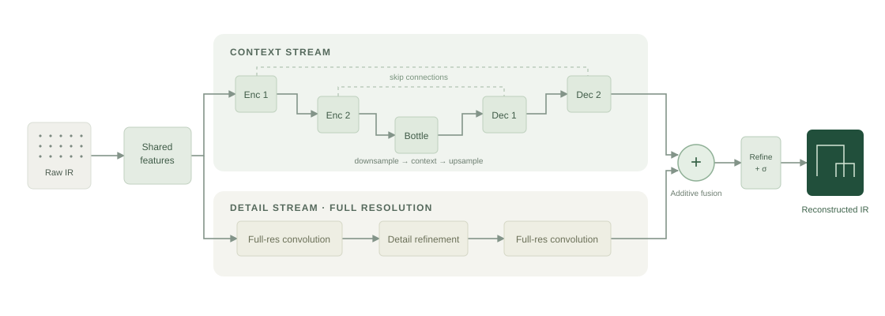
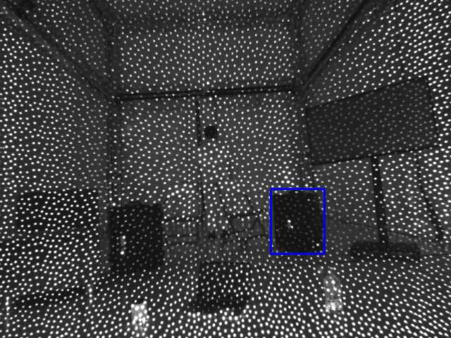
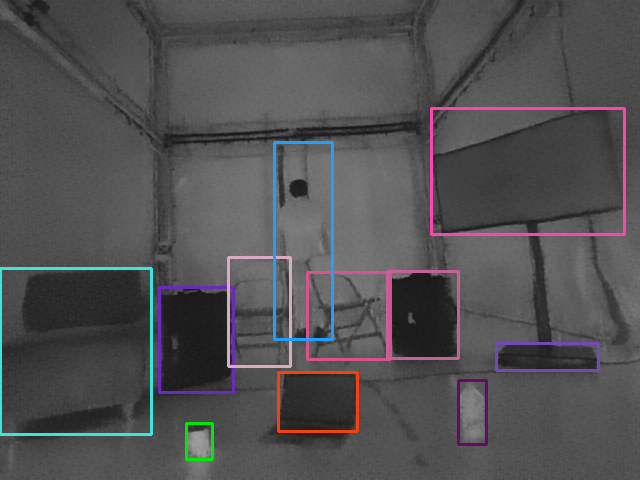
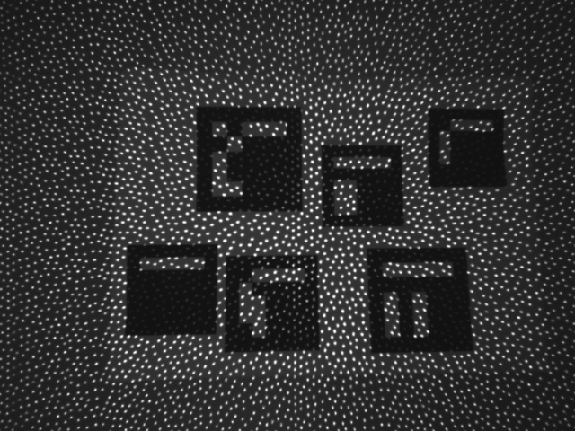
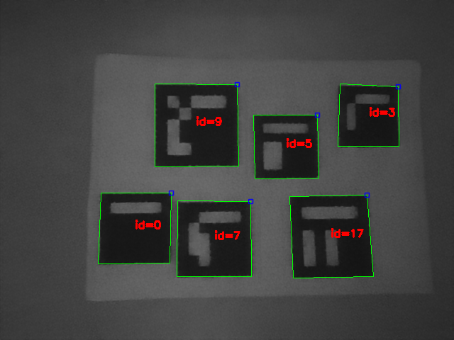
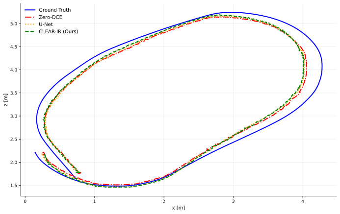
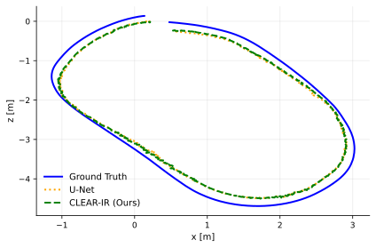

Global context
A U-Net encoder–decoder captures scene geometry across scales. Skip connections recover spatial information lost during pooling.
Robotic perception · arXiv:2510.04883v2
Clarity-Enhanced Active Reconstruction of Infrared Imagery for low-light enhancement
A cleaner infrared signal. A clearer path for robotic vision.
The University of Manchester · United Kingdom
¹ Mean enhancement latency reported in Table II; not end-to-end SLAM runtime.
The idea
Active infrared can see through darkness. Its projected dot pattern gets in the way of understanding what it sees.
This paper presents a novel approach for enabling robust robotic perception in dark environments using infrared (IR) stream. IR stream is less susceptible to noise than RGB in low-light conditions. However, it is dominated by active emitter patterns that hinder high-level tasks such as object detection, tracking and localisation. To address this, a Deep Multi-scale Aware Overcomplete (DeepMAO) inspired architecture is proposed that reconstructs clean IR images from emitter populated input, improving both image quality and downstream robotic performance. This approach outperforms existing enhancement techniques and enables reliable operation of vision driven robotic systems across illumination conditions from well-lit to extreme low-light scenes. The results outline the ability of this work to be able to mimic RGB styling from the scene and its applicability on robotics tasks that were trained on RGB images, opening the possibility of doing these tasks in extreme low-light without on-board lighting.
See the difference
Compare the paper’s reconstruction with raw IR and visible-light enhancement baselines.
How it works
A dual-stream network inspired by DeepMAO brings global structure and fine spatial detail back together.

A U-Net encoder–decoder captures scene geometry across scales. Skip connections recover spatial information lost during pooling.
An overcomplete branch keeps the original spatial grid, preserving meaningful boundaries and texture while suppressing emitter artefacts.
Intensity, structural, edge, perceptual, and regularisation losses accommodate the spectral gap between IR inputs and RGB-style targets.
Trained on 6,719 captured IR/RGB pairs, expanded to 33,595 images through augmentation, using a 90/10 training-validation split.
Downstream perception
Reconstructed IR supports pretrained object perception and conventional visual markers.
Pretrained YOLOv26, evaluated without IR-specific fine-tuning.


Figure 4. Reconstruction makes objects usable for the pretrained model; some class labels remain incorrect, as discussed in the paper.
Standard ArUco detection without specialised reflective tags.


Figure 5. ² Marker detection counts reported in Table I for the evaluated example.
Visual localisation
CLEAR-IR feeds reconstructed images into a modified ORB-SLAM3 pipeline with SuperPoint features and L2 descriptor matching.


Trajectory RMSE in metres ↓ · mean ± standard deviation
| Method | FB | SQ1 | SQ2 | Inference ms |
|---|
Extreme low light: RGB enhancement baselines fail to initialise; reconstructed IR supports SLAM across all three sequences.
DNI = did not initialise. Results from Table II; inference is enhancement latency, not the whole SLAM pipeline. Evaluation details ↗
Explore the work
Read the full method and evaluation, or explore the recorded sequences used to evaluate low-light robotic perception.
Build on this work
@misc{shankar2025clearir,
title = {CLEAR-IR: Clarity-Enhanced Active Reconstruction of
Infrared Imagery for low-light enhancement},
author = {Nathan Shankar and Marton Gonczy and Hujun Yin
and Pawel Ladosz},
year = {2025},
eprint = {2510.04883},
archivePrefix = {arXiv},
primaryClass = {cs.RO},
note = {Version 2, 27 February 2026},
url = {https://arxiv.org/abs/2510.04883v2}
}